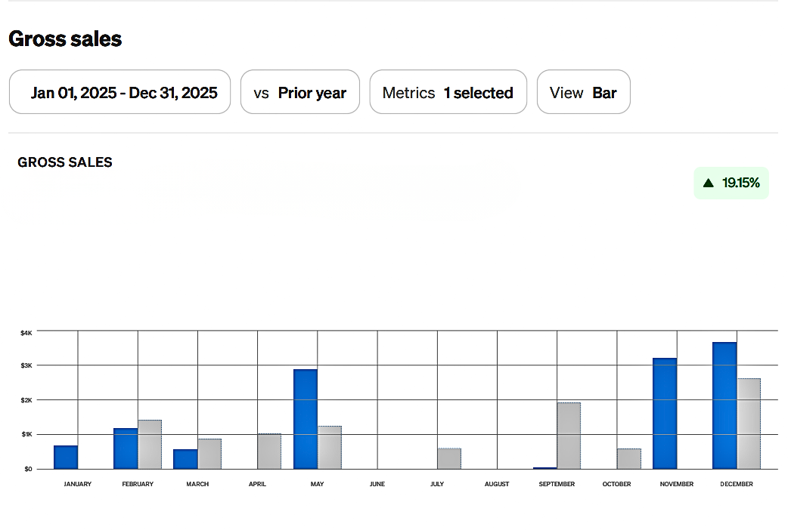
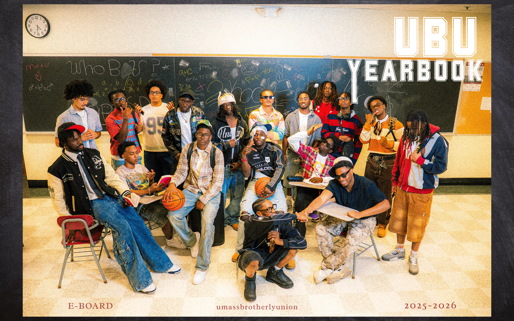

— Real Application —
Analytics Skills Applied to Scale
This analysis tracks performance trends over time using Square reporting tools. By monitoring patterns in demand and identifying periods of growth, I was able to adjust strategy and improve overall consistency. Rather than focusing on revenue alone, this approach emphasizes understanding trends, timing, and customer behavior to support long-term scalability. The data below reflects real transaction volume, repeat client rates, and seasonal demand across the market, insights that directly shaped scheduling decisions and service pricing.


Campus Leadership — Vice President & Treasurer
Beyond academics, I serve as Vice President, Treasurer, and Fashion Model Coordinator for academic and cultural organizations at UMass Amherst. In these roles I manage budgets, coordinate large-scale events, and lead cross-functional teams — applying the same structured, data-informed thinking I use in coursework to real organizational challenges. Overseeing finances for a student organization with 15+ executive board and hundreds of general body members has sharpened my ability to communicate priorities clearly, allocate resources strategically, and deliver results under time constraints. These experiences put me at the intersection of leadership, communication, and analytics, the exact skills I aim to carry into a career in business and data analytics.